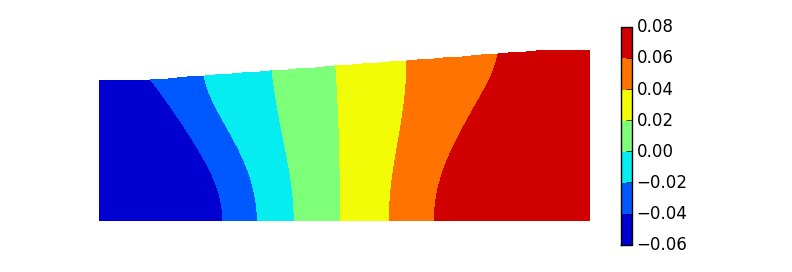

使用Python导出MSC.Marc后处理数据¶
在Marc后处理中，我们通常希望将某些数据导出后重新绘图。对于少量数据，可以使用PATH PLOT和HISTORY PLOT采集数据，然后直接使用界面上的SAVE按钮保存到文件，或者使用COPY TO CLIPBOARD按钮复制到剪切板。
PATH PLOT收集不同节点在某个时刻的后处理数据HISTORY PLOT收集某个节点在不同时刻的后处理数据
然而此方法难以导出大量的不规则区域的数据。查阅Marc帮助手册的Python Manual部分，发现已经提供了使用Python脚本获取后处理数据的方法。
本文即以 导出模型所有节点位移数据并重绘云图 为例，记录py_post模块的使用方法。
PyPost介绍¶
Marc提供了PyMentat和PyPost两个Python模块用以前后处理数据的获取和修改。前者的执行依赖于Mentat界面，只能在Mentat界面中调用Python脚本，而后者可以完全独立于Mentat。
PyPost模块提供了一系列内置函数，用于读取Marc的后处理文件（*.t16），获取标量、向量、张量数据等。具体参考Marc帮助手册Python Manual卷。
准备工作¶
为了顺利使用PyPost模块，需要将模块文件py_post.pyd（\mentat2012\shlib\）复制到Python的库文件目录（\mentat2012\python\win64\Lib），并且确保Python环境变量PYTHONPATH已经指向Python库文件目录。
这与使用其他Python模块是一样的，目的是让Python知道模块文件所在目录，然后才能用 from py_post import * 语句导入。
实例¶
从后处理文件中读取位移数据的基本思路为：
- 打开后处理文件
- 跳转到指定增量步
- 获取节点总数及每个节点的坐标和位移
# encoding: utf8
from py_post import * # 导入PyPost模块
# 读取后处理文件
fname = "test_job1.t16" # 当前目录下的Marc后处理文件，否则给出具体路径
p = post_open(fname) # 打开后处理文件
p.moveto(26) # 跳转到第26增量步
# 节点数
num = p.nodes()
data = []
k = 0
# 获取每个节点的位移值
while k < num:
pk = p.node(k) # 第k个节点对象，x，y，z属性分别为三个坐标值
if pk.x>=-8 and pk.x<=27: # 选择x坐标在[-8, 27]范围内的节点
dx, dy, _ = p.node_displacement(k) # 获取位移
data.append([pk.x, pk.y, dx, dy])
k += 1上面的代码可以实现节点坐标、位移的获取，接下来即可进行云图的绘制。
绘制云图的contourf()函数接受的是网格化数据，而当前data列表中的是离散数据，所以需要先生成网格化的坐标数据，然后根据data中的数据插值得到指定节点上的位移数据，最后以新的数据绘制云图。
借助Python科学计算库Numpy和绘图库matplotlib，示例代码如下：
# 接前面代码
import numpy as np
import matplotlib.pyplot as plt
from matplotlib.mlab import griddata
data = np.array(data)
# 读取后处理文件得到的离散数据
xi = data[:,0] + 87.64
yi = data[:,1]
dzi = data[:,2]
dri = data[:,3]
# 生成网格化的坐标
dx = np.linspace(np.min(xi), np.max(xi), 500)
dy = np.linspace(np.min(yi), np.max(yi), 250)
x, y = np.meshgrid(dx, dy)
# 使用griddata插值得到节点上的位移值
dz = griddata(xi, yi, dzi, x, y)
dr = griddata(xi, yi, dri, x, y)
# 根据模型几何结构显示数据
k = 0.075
t = (y>k*x) * (y>6.59)
dz[t] = np.nan
dr[t] = np.nan
# 以轴向位移为例作云图
plt.figure()
c = plt.contourf(x, y, dz)
plt.colorbar(c)
plt.gca().set_aspect('equal')
plt.gca().set_axis_off()
plt.show()最终效果如下：
